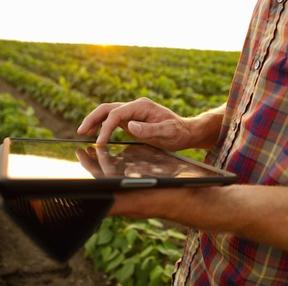

We make it easy to buy and sell local food online.
Producers upload their products to our online store, and we market them to customers all over Northland. With all that food gathered in one convenient location, it’s easy for our customers to shop online. And we’re there every step of the way, providing the tools necessary for successful transactions. We maintain the infrastructure. We sort and deliver the food. And we care about you.
That’s why we’re also active in the wider community, promoting healthy eating and sustainable agriculture through our presentations, education initiatives and special events. We support other local food initiatives, and encourage these groups to join us in building a positive future.